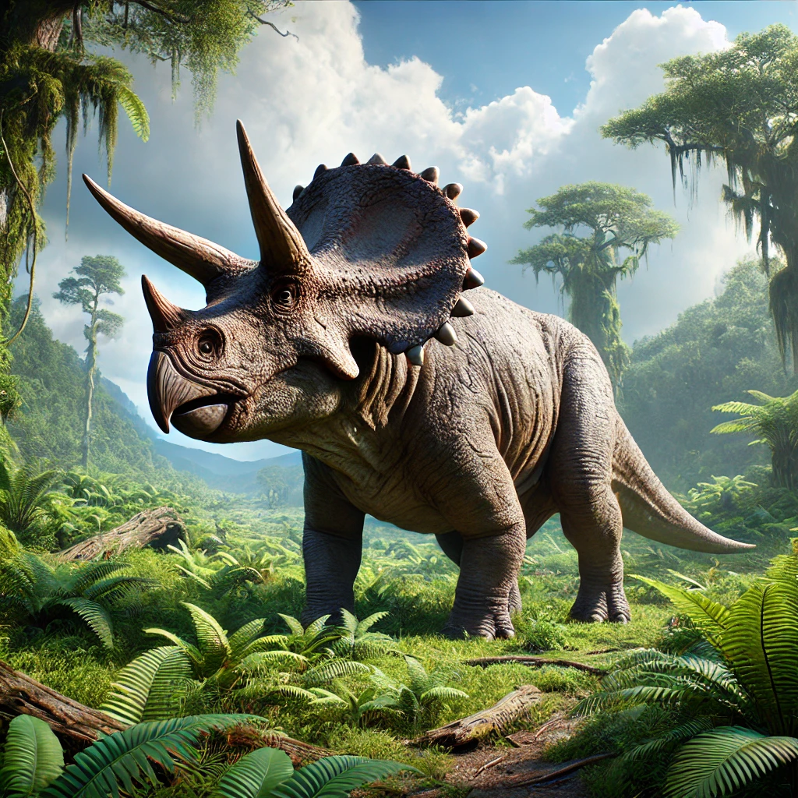

Triceratops
The Triceratops is one of the most iconic dinosaurs, easily recognizable by its three facial horns and large bony frill. This herbivorous dinosaur lived during the late Cretaceous period, around 68 to 66 million years ago, in what is now North America. The name "Triceratops" means "three-horned face," referring to the two large horns above its eyes and the smaller horn on its nose.
Triceratops was one of the last known non-avian dinosaurs before the mass extinction event. It had a large, sturdy body, measuring up to 30 feet in length and weighing between 6 to 12 tons. Despite its size and formidable appearance, Triceratops was a plant-eater, using its beak-like mouth to clip off vegetation.
Here are some key facts about Triceratops:
- Length: Approximately 30 feet (9 meters)
- Height: About 10 feet (3 meters) at the hips
- Weight: Up to 12 tons (10,886 kilograms)
- Diet: Herbivorous, feeding on plants like ferns, cycads, and palms
- Location: Fossils found in North America, particularly in the western United States
Behavior and Habitat
Triceratops lived in herds and likely used its horns and frill for defense against predators like Tyrannosaurus Rex, as well as for display and possibly combat with other Triceratops. The frill was a large bony shield that protected its neck, and it may have also played a role in thermoregulation.
- Strong jaws: Triceratops had a beak-like mouth and rows of shearing teeth, ideal for cutting through tough plant material.
- Social behavior: Evidence suggests that Triceratops may have lived in herds, providing protection from predators.
- Horn usage: The three facial horns were likely used in defense, combat, and possibly in mating displays.
Download a Picture of Triceratops
Click the button below to download a high-quality image of a Triceratops.
Download Triceratops Image{kind=link}